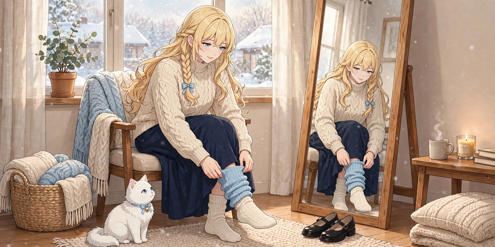

冷え対策の靴下とレッグウォーマーの重ね方（40代）

ルミ：内側がきついと、重ねた意味がないにゃ。口ゴムなしから選ぶにゃ。
この記事の商品（先に比較）
| 商品 | 価格（税込） | お店 |
|---|---|---|
| ウール裏パイルリブソックス | 880円 | グレースメグミ |
| 内側シルクの薄手レッグウォーマー | 1,080円 | 奈良のくつした おでかけびより |
| シルク＆オーガニックコットンのレッグウォーマー | 860円 | 奈良のくつした おでかけびより |
| メリノウールの薄手靴下 | 1,200円 | 奈良のくつした おでかけびより |
| ゆるめ着圧ソックス | 1,500円 | 奈良のくつした おでかけびより |
| シルク混のかかとケアソックス | 1,380円 | 奈良のくつした おでかけびより |
| まるでこたつソックス | 1,980円 | 靴下の岡本公式 楽天市場店 |
| まるでこたつレッグウォーマー | 1,980円 | 靴下の岡本公式 楽天市場店 |
| シルクとコットンの薄いレッグウォーマー | 1,690円 | 温むすび楽天市場店 |
| 健康足首ウォーマー | 1,780円 | 温むすび楽天市場店 |
価格は2026年11月28日に確認したものです。今回の10点は靴下5点・レッグウォーマー5点で、860円から1,980円の範囲です。「〜」の付いた価格は、セットやサイズによって変わる開始価格です。一番レビューが集まっているのは、温むすびの健康足首ウォーマーで11,819件・★4.54です。セールやクーポンで変わることがあります。
目安1：内側の靴下は薄手・口ゴムなし・肌にやさしい素材
重ね履きの内側は、薄手の靴下から選びます。厚手の靴下を内側にすると、外側を履いたときにきつくなって、足がむくんだように見えることがあります。今回の商品では、奈良のくつしたのメリノウールの薄手靴下が1,200円〜で、ウール94.2%（メリノウール）の薄手タイプです。口ゴムなしで締め付けず、重ね履きの内側にも向いていると説明されています。シルク混のものも、肌に直接当たる内側に向いています。同じく奈良のくつしたのシルク混のかかとケアソックスは1,380円〜で、綿43%・絹37%のトゥレス（つま先なし）タイプです。就寝用で、足首ウォーマーも兼ねると説明されています。かかとのカサつきが気になる人は、かかとケアと冷え対策を兼ねられる形です。内側の靴下は、サイズも確認してください。グレースメグミのウール裏パイルリブソックスは880円で、内側総パイルの厚手ウール混です。冷えとり重ね履き用の大きめサイズで、丈長め、22〜25cmと説明されています。重ね履き用に大きめのサイズを選ぶと、外側を重ねたときにもきつくなりにくくなります。内側に着圧タイプを使うときは、ゆるめのものを選んでください。奈良のくつしたのゆるめ着圧ソックスは1,500円〜で、綿55%のゆるめ着圧です。履き口ゆったりで締め付けすぎず、23〜25cmと26〜28cmのサイズ展開があります。きつい着圧を内側にすると、足が締め付けられて、かえって冷えを感じやすくなることがあります。
目安2：外側のレッグウォーマーは丈と厚みで選ぶ
外側のレッグウォーマーは、丈の長さで見え方と暖かさが決まります。丈が長いほど、ふくらはぎから足首まで覆えて、冷えを感じにくくなります。今回の商品では、奈良のくつしたのシルク＆オーガニックコットンのレッグウォーマーが860円〜で、絹19%・オーガニックコットン16%・ウール9%の素材です。ショート18cm・ミドル34cm・ロング50cmの3つの丈から選べます。ロング50cmなら、ひざ下までしっかり覆えます。同じく奈良のくつしたの内側シルクの薄手レッグウォーマーは1,080円〜で、内側シルク37.4%の薄手タイプです。長さ36cmで締め付けず、寝る時用にも向いていると説明されています。薄手のものは、靴下の上から重ねても、もこもこしにくいのが特徴です。厚手のものは、部屋で過ごすときや、冷えを強く感じるときに向いています。靴下の岡本のまるでこたつレッグウォーマーは1,980円で、つま先開きのひざ下丈です。ブラックとグレーの2色で、フリーサイズです。つま先が開いているので、室内で靴下と合わせて履く形です。温むすびのシルクとコットンの薄いレッグウォーマーは1,690円で、約26cmの薄手一重編みです。肌側シルク・表側コットンで、裾の下にすっきり重ねられると説明されています。パンツの裾の下に重ねるときは、このような薄手のものが向いています。温むすびの健康足首ウォーマーは1,780円で、約19cmのショート丈です。内側シルク・外側ウールの二重構造で、14色の色展開、日本製と説明されています。足首だけを集中的に覆いたい人に向いています。
目安3：重ねる順番と丈の段差（見た目を整える）
重ね履きで一番大事なのは、重ねる順番です。基本は「薄手の靴下→厚手の靴下→レッグウォーマー」の順番です。薄いものから厚いものへ重ねると、足がすっきり見えます。逆に、厚手のものを内側にすると、外側がパンパンになって、足が太く見えることがあります。丈の段差も、見た目を整えるコツです。内側の靴下の丈と、外側のレッグウォーマーの丈を、少しずつずらして重ねると、境目が目立ちにくくなります。例えば、足首丈の靴下に、ミドル丈のレッグウォーマーを重ねると、足首のあたりで段差ができます。段差があると、重ねていることが分かりにくくなります。同じ丈のものをぴったり重ねると、境目が1本の線になって、重ねていることが目立ちます。色も、見た目を整えるポイントです。内側と外側の色を、同じ色の系統でそろえると、まとまって見えます。白・ベージュ・グレーなどの淡い色でそろえるか、黒・紺・茶などの濃い色でそろえるのが基本です。内側が白で外側が黒のように、色のコントラストが強いと、境目が目立ちやすくなります。靴を履くときは、重ねた分だけ足が太くなるので、靴のサイズも確認してください。普段の靴がきつくなる人は、ワンサイズ大きめの靴や、ゆったりした作りの靴と合わせるのがおすすめです。
あえて推さないもの
- 内側に厚手の靴下を履く重ね方（外側がきつくなって、足がむくんだように見えます。内側は薄手から選んでください）
- 口ゴムがきつい靴下を内側に使うこと（締め付けが強く、重ねた分だけ足が苦しくなります。口ゴムなしやゆるめのものを選んでください）
- 同じ丈のものをぴったり重ねること（境目が1本の線になって、重ねていることが目立ちます。丈を少しずつずらしてください）
- 内側と外側で色のコントラストが強い組み合わせ（境目が目立ちやすくなります。同じ色の系統でそろえてください）
- 靴のサイズを確認せずに厚手に重ねること（普段の靴がきつくなって、足が痛くなることがあります。靴のゆとりも一緒に確認してください）
重ね方の手順（出かける前・家で過ごすとき）
出かけるときの重ね方は、まず薄手の靴下を履きます。メリノウールの薄手靴下や、シルク混のかかとケアソックスのような、肌にやさしい薄手のものが向いています。次に、厚手の靴下を重ねます。ウール裏パイルリブソックスのような、内側総パイルの厚手タイプです。最後に、レッグウォーマーを重ねます。パンツの裾の下に重ねるなら、薄手一重編みのシルクとコットンの薄いレッグウォーマーのような、すっきりしたものが向いています。スカートやワンピースと合わせるなら、ミドル丈やロング丈のレッグウォーマーを重ねると、ふくらはぎまで覆えて、見た目もまとまります。家で過ごすときは、靴を履かないので、もっと自由に重ねられます。まるでこたつソックスのようなハイソックスタイプに、まるでこたつレッグウォーマーを重ねる形です。まるでこたつソックスは1,980円で、足首の三陰交を特殊素材で温熱刺激するハイソックスと説明されています。23〜25cmで、全8色の色展開があります。家では、足首ウォーマーだけを重ねる形もおすすめです。健康足首ウォーマーのようなショート丈のものは、足首だけを覆うので、家事をするときにも邪魔になりにくくなります。
寝るときの重ね方（締め付けない・薄手シルク）
寝るときの重ね方は、出かけるときとは別に考えます。寝るときは、締め付けないことが一番大事です。口ゴムのきつい靴下や、着圧の強いものを履いたまま寝ると、足が締め付けられて、寝苦しくなることがあります。寝るときは、口ゴムなしの薄手靴下に、薄手のレッグウォーマーを重ねる形がおすすめです。内側シルクの薄手レッグウォーマーは、長さ36cmで締め付けず、寝る時用にも向いていると説明されています。シルク＆オーガニックコットンのレッグウォーマーも、ショート18cmの丈を選べば、寝るときに邪魔になりにくくなります。シルク混のかかとケアソックスは、就寝用で、足首ウォーマーも兼ねると説明されています。寝るときにかかとケアも兼ねたい人に向いています。寝るときは、重ねすぎないことも大事です。厚手のものを何枚も重ねると、足が蒸れて、かえって寝苦しくなることがあります。薄手のものを2枚重ねるくらいが、寝るときの目安です。布団に入る前に、足首ウォーマーだけを外す人もいます。足首が温まったら、レッグウォーマーだけを外して、薄手の靴下だけで寝る形です。自分の寝やすい組み合わせを見つけてください。
お手入れ（洗い方・毛玉・型崩れ）
靴下とレッグウォーマーは、毎日使うものだからこそ、お手入れの仕方で長持ちが変わります。洗うときは、洗濯ネットに入れてください。ネットに入れると、洗濯機の中で靴下同士がからまりにくくなります。シルク混のものは、洗濯表示を確認して、手洗いか弱水流で洗ってください。シルクは、熱いお湯で洗うと、風合いが変わることがあります。ぬるま湯でやさしく押し洗いするのが基本です。ウール混のものも、洗濯表示を確認してください。ウールは、熱いお湯や強い水流で洗うと、縮むことがあります。干すときは、陰干ししてください。直射日光で干すと、色あせの原因になります。靴下は、履き口を上にして、風通しのよい場所で干してください。レッグウォーマーは、筒状のまま干すと、乾きにくいので、広げて干すのがおすすめです。毛玉ができたら、毛玉取り器で軽く取ってください。毛玉を引っ張って取ると、生地が傷みます。ウールやシルク混のものは、毛玉ができやすいので、着たあとにブラッシングしておくと、毛玉がつきにくくなります。シーズンの終わりに洗ってからしまうと、次のシーズンも気持ちよく使えます。
この記事の目安に合う商品
特徴：冷え対策の靴下5点・レッグウォーマー5点の計10点。奈良のくつした（おでかけびより）が5点、靴下の岡本が2点、温むすびが2点、グレースメグミが1点。価格は2026年11月28日に確認したものです。「〜」の付いた価格は開始価格で、セットやサイズにより変わります。


内側シルクの薄手レッグウォーマー
内側シルク37.4%の薄手レッグウォーマー。長さ36cmで締め付けず、寝る時用にも
★4.72（レビュー800件）
1,080円（税込）
奈良のくつした おでかけびより

シルク＆オーガニックコットンのレッグウォーマー
絹19%・オーガニックコットン16%・ウール9%。ショート18cm／ミドル34cm／ロング50cmの3丈
★4.61（レビュー481件）
860円（税込）
奈良のくつした おでかけびより


あわせて読みたい：あったかレギンスの選び方／腹巻きとインナーの選び方／夕方の脚のむくみケア